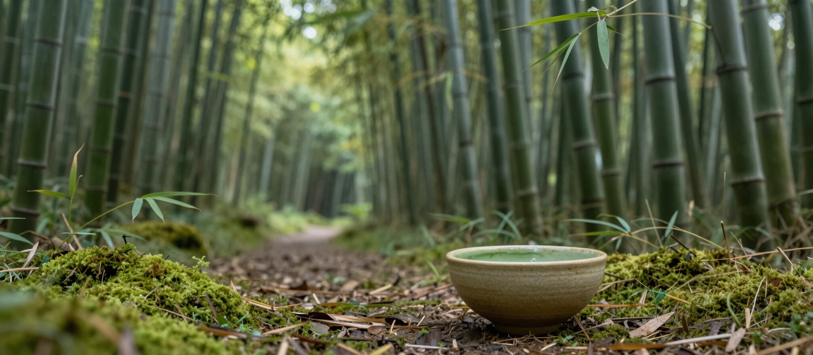

Our Story

Somewhere along the way, the two of us, Shweta and Saurabh, realized we wanted to share what we've learned with our friends and community.
Saurabh spent many years learning and practicing meditation. He found a path that is experiential rather than theoretical. It's simple to understand, built on three realizations and the meditation techniques that lead to them.
Shweta has been making healthy vegetarian meals inspired by Ayurveda since childhood. With a knack for turning simple ingredients into something delicious, she has spent years perfecting combinations she now wants to share more widely.
We believe practicing together helps everyone go deeper and faster. It also makes it easier to stay consistent, something that's often hard to do alone. We also believe healthy food is just as essential to our wellbeing as a quiet mind.
So we invite you to join us for an intro session to still our minds together and savour good food together. Whether you're just beginning your mindfulness journey or have been practicing for years, we'd love to be part of your journey.
Shweta and Saurabh